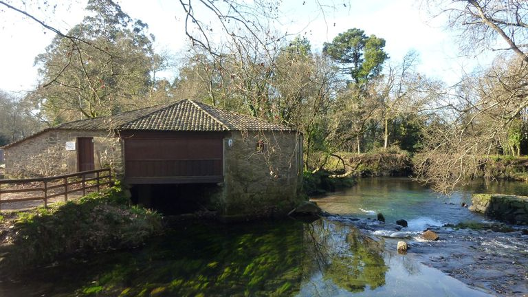

Visitando O Rosal
Se encuentra a orillas del río Miño, que hace frontera entre España y Portugal, y próximo a su desembocadura
Que visitar:
- Os muíños do Folón e do Picón

- Iglesia de Santa Mariña

- Muíños das Aceñas

Dónde comer:
- Casa Pintora
- Quinta Couselo
- A Competencia